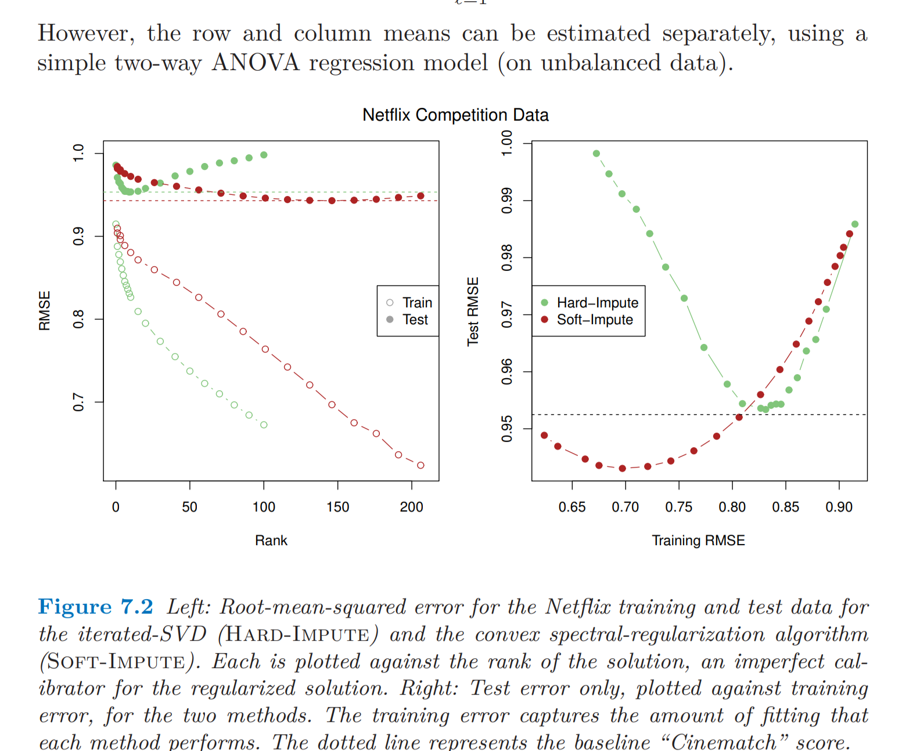

The Singular Value Decomposition (SVD) provides a source of insight into the determinants of the variation in tabular (rectangular) data. It is a matrix decomposition rooted in the fundamental theorem of linear algebra (FTLA) as discussed in the wonderful paper by Gilbert Strang.
SVD
Matrices and Linear Transformations
A matrix \(A \in \mathbb{R}^{n \times m}\) can be thought of as a linear mapping between two spaces: \[\begin{align*} A: \mathbb{R}^m \rightarrow \mathbb{R}^n \end{align*}\]
The interpretation requires no assumptions on the shape or structure of the matrix \(A\).
Singular Value Decomposition
The singular value decomposition writes the matrix \(A\) as a product of three matrices:
\[\begin{align*} A &= U \Sigma V^t \end{align*}\]
Where \(U \in \mathbb{R}^{n\times n}\) and \(V \in \mathbb{R}^{m\times m}\) are orthonormal matricies and \(\Sigma\) is the rectangular diagonal matrix \(\text{diag}(\sigma_1, \sigma_2, \ldots, \sigma_{\text{min}(n,m)})\).
This decomposition exists for any real matrix \(A\).
Singular Vectors
The vectors \(U = (u_1, \dots, u_n)\) for \(u_{i} \in \mathbb{R}^n\) are the left singular vectors.
- They are the eigenvectors of \(XX^{\prime}\).
The vectors \(V = (v_1, \dots, v_m)\) for \(v_j \in \mathbb{R}^m\) are the right singular vectors.
- They are the eigenvectors of \(X^{\prime}X\)
Singluar Values
By convention, the values of \(\Sigma\) are arranged in decending order: \(\sigma_1 \geq \sigma_2 \geq \cdots \geq \sigma_{\text{min}(n,m)}\).
These are called the singular values of the matrix \(A\).
The number of non-zero singular values is equal to the rank \(r\) of the matrix \(A\).
SVD Visual
Low-rank Matrix Approximation
The singular value decomposition allows us to write the matrix \(A\) as a sum of \(r\), rank \(1\) matricies:
\[\begin{align*} A &= \sum_i^{r=\text{rank}(A)} \sigma_i u_i v_i^t \end{align*}\]
This is an exact decomposition.
The optimal rank \(r^{\ast} < r\) approximation to \(X\) (based on the Frobenius norm) is
\[\hat{A} = \sum_i^{r^{\ast}} \sigma_i u_i v_i^t\]
Netflix Challenge and Matrix Completion
The low rank approximation via SVD was a critical ingredient of the winner of the Netflix Challenge



What is special about the singular vectors?
A useful way of viewing the singular value decomposition is to think about what would happen when projecting columns of \(U\) and \(V\):
\[\begin{align*} A v_i &= \sigma_i u_i \\ A^t u_i &= \sigma_i v_i \end{align*}\]
Notice that both equations use \(\sigma_i\)!
Diagnonalizing \(A\)
Therefore, if we have an arbitrary vector \(z \in \mathbb{R}^m\) and we write it in the basis of \(V\):
\[\begin{align*} z &= \sum_i \alpha_i v_i \end{align*}\]
The mapping of \(A\) can then be easily calculated in the coordinate system of \(U\):
\[\begin{align*} Az &= \sum_i \alpha_i \sigma_i u_i \end{align*}\]
Due to the linearity of the matrix operation.
A Picture
Simple Example
A <- matrix(1:6,ncol=3)
A
[,1] [,2] [,3]
[1,] 1 3 5
[2,] 2 4 6SVD <- svd(A, nu=2, nv=3)
Sigma <- cbind(diag(SVD$d),0)
U <- SVD$u
V <- SVD$v
A - U %*% Sigma %*% t(V)
[,1] [,2] [,3]
[1,] 6.661338e-16 0.000000e+00 0.000000e+00
[2,] 1.110223e-15 1.332268e-15 8.881784e-16Unit Ball
N <- 1e4
p <- 3
unitBall <- matrix(runif(N * p, -1, 1), nrow=3)
unitBall <- unitBall[,apply(unitBall^2, 2, sum) < 1]
unitBall[,1:4]
[,1] [,2] [,3] [,4]
[1,] 0.01092632 -0.5466198 0.3034195 0.05765038
[2,] -0.31310741 0.2495561 -0.7050712 -0.09640481
[3,] -0.17904672 -0.4968334 0.3904865 0.18179566Picture
Another Picture
Least Squares and SVD
The standard formulation of least squares projection involves the matrix inverse of \(X^tX\):
\[\begin{align*} \widehat{\beta} &= (X^t X)^{-1} X^t y \end{align*}\]
Problem
Why might this be a problem? Well, consider the simple case where we have \(n = p = 2\) with the following:
\[\begin{align*} X &= \left( \begin{array}{cc} 10^9 & -1 \\ -1 & 10^{-5} \end{array}\right) \\ \beta &= \left( \begin{array}{c} 1 \\ 1 \end{array}\right) \end{align*}\]
For simplicity, well even assume that there is no noise vector. Then we have:
\[\begin{align*} y &= \left( \begin{array}{cc} 10^9 & -1 \\ -1 & 10^{-5} \end{array}\right) * \left( \begin{array}{c} 1 \\ 1 \end{array}\right) \\ &= \left( \begin{array}{c} 10^9 - 1 \\ -0.99999 \end{array}\right) \end{align*}\]
What happens in R
X <- matrix(c(10^9, -1, -1, 10^(-5)), 2, 2)
beta <- c(1,1)
y <- X %*% beta
Xinv <- solve(X)
Xinv %*% y
[,1]
[1,] 1
[2,] 1Alternatively
However, what if we try to calculate this with the normal equations? Here we need to invert the matrix \(X^t X\).
Error in solve.default(t(X) %*% X) :
system is computationally singular: reciprocal condition number = 8.09999e-23R knows that this is not going to be good, and refuses to calculate the inverse by default.
What if we ignore the warning
Suppose that we turn off this warning (by setting the tolerance to zero); what happens?
[,1]
[1,] 0.9999981
[2,] 2048.0000000What is happening
In a linear model, we only observe \(X \beta\), rather than \(\beta\) itself. There can be difficult numerical problems that arise when \(X\beta\)s are very similar for regression vectors \(\beta\) that are quite different.
What is happening
Say that we have an error (or noise) \(\Delta\) in the term \(\beta\). Consider the following quantity for a full rank matrix \(A\):
\[\begin{align*} \frac{|| A\delta ||_2}{||\delta||_2} \end{align*}\] Let \(\delta = \sum_i \alpha_i v_i\). Then: \[\begin{align*} \frac{|| A\delta ||_2}{||\delta||_2} &= \sqrt{\frac{\sum_i \sigma_i^2 \alpha_i^2 v_i^2}{\sum_i \alpha_i^2 v_i^2}} \end{align*}\] We can see that the minimum occurs when \(\delta\) is equal to \(v_{\text{min}(n,m)}\).
Likewise, the maximum occurs when \(\delta\) is equal to \(v_1\).
What is happening
We wish to control the ratio of the relative error in estimation to that of projection:
\[\begin{align*} \frac{\text{rel. error estimation}}{\text{rel. error projection}} &= \frac{|| \beta + \Delta ||_2 / || \beta ||_2}{|| X(\beta + \Delta) ||_2 / || X\beta ||_2} < \epsilon \end{align*}\]
So we do not want large changes in \(\Delta\) to yield relatively small changes in the prediction space \(X\beta\).
Condition Number
Notice that we can re-arrange the equation as:
\[\begin{align*} \frac{|| \beta + \Delta ||_2 / || X(\beta + \Delta) ||_2}{|| \beta ||_2 / || X\beta ||_2} \end{align*}\]
And now we have an upper bound on the numerator and an lower bound on the denominator via the singular values:
\[\begin{align*} \frac{\text{rel. error estimation}}{\text{rel. error projection}} \leq \frac{\sigma_{max}}{\sigma_{min}} \end{align*}\]
This is called the condition number of the matrix \(A\), and was the quantity R complained about when I tried to invert an ill-conditioned matrix.
SVD and the Normal Equations
If we take the SVD of the data matrix \(X\), we have
\[\begin{align} X &= U D V^t. \end{align}\]
Plugging this into the ordinary least squares estimator gives:
\[\begin{align} \beta &= (X^t X)^{-1} X^t y \\ &= (V D^t U^t U D V^t)^{-1} V D^t U^t y \\ &= (V D^t (U^t U) D V^t)^{-1} V D U^t y \\ &= (V D^t I_p D V^t)^{-1} V D U^t y \\ &= (V D^2 V^t)^{-1} V D U^t y \end{align}\]
Simplification
By taking the fact that a diagonal matrix is its own transpose and using that \(U^t U\) is equal to the identity. Note that \(D^2\) is just a matrix with the squared singular values along the diagonal.
Now, notice that the inverse of \(V\) is \(V^t\), and vice-versa. Further, the inverse of \(D^{2}\) is equal to a diagonal matrix with the inverse of the squared singular values along the diagonal (this exists if we assume that \(\sigma_1 > 0\)). Therefore:
\[\begin{align} (V D^2 V^t)^{-1} &= (V^{t})^{-1} D^{-2} V^{-1} = V D^{-2} V^t \end{align}\]
Further Simplification
And we can further simplify the equation for the ordinary least squares estimator:
\[\begin{align} \beta &= (V D^2 V^t)^{-1} V D U^t y \\ &= V D^{-2} V^t V D U^t y \\ &= V D^{-2} D U^t y \\ &= V D^{-1} U^t y. \end{align}\]
This gives us a compact way to write the ordinary least squares estimator. It is also far more numerically stable to use this formula to compute the estimate \(\beta\) from a dataset.
Least squares and SVD: Example
Lets simulate data generated by a linear model
And take the SVD of the matrix X:
svd_output <- svd(X)
U <- svd_output[["u"]]
V <- svd_output[["v"]]
sigma <- svd_output[["d"]]
Verify that the matrix \(V^t V\) is equal to the identity (note that it will only be close the identity because of numerical error):
t(V) %*% V
[,1] [,2] [,3] [,4]
[1,] 1.000000e+00 -9.540979e-17 9.540979e-18 -1.387779e-17
[2,] -9.540979e-17 1.000000e+00 6.383782e-16 -1.110223e-16
[3,] 9.540979e-18 6.383782e-16 1.000000e+00 5.551115e-16
[4,] -1.387779e-17 -1.110223e-16 5.551115e-16 1.000000e+00
[5,] 1.387779e-17 3.816392e-16 -5.898060e-16 2.775558e-17
[6,] -3.442130e-17 3.740159e-17 2.523819e-17 1.851275e-17
[,5] [,6]
[1,] 1.387779e-17 -3.442130e-17
[2,] 3.816392e-16 3.740159e-17
[3,] -5.898060e-16 2.523819e-17
[4,] 2.775558e-17 1.851275e-17
[5,] 1.000000e+00 -2.604796e-17
[6,] -2.604796e-17 1.000000e+00Rounding to the 10th decimal place shows the result more clearly:
[,1] [,2] [,3] [,4] [,5] [,6]
[1,] 1 0 0 0 0 0
[2,] 0 1 0 0 0 0
[3,] 0 0 1 0 0 0
[4,] 0 0 0 1 0 0
[5,] 0 0 0 0 1 0
[6,] 0 0 0 0 0 1Then, run the following code to verify that all of the dimensions are exactly as we would expect:
{
cat("Dimension of X: ")
cat(paste(dim(X), collapse = " by "))
cat("\nDimension of U: ")
cat(paste(dim(U), collapse = " by "))
cat("\nDimension of V: ")
cat(paste(dim(V), collapse = " by "))
cat("\nLength of singular values: ")
cat(length(sigma))
}
Dimension of X: 10000 by 6
Dimension of U: 10000 by 6
Dimension of V: 6 by 6
Length of singular values: 6The following code computes the least squares coefficents using the matrix \(X\) and the response vector \(y\):
lm.fit(X, y)$coefficients
x1 x2 x3 x4 x5 x6
1.274010 1.738340 3.009043 4.004230 5.009358 5.990406 Compute the same equation using the SVD formula for \(\beta\):
[,1]
[1,] 1.274010
[2,] 1.738340
[3,] 3.009043
[4,] 4.004230
[5,] 5.009358
[6,] 5.990406Maximum values
I want to simulate the size of \(|| X v ||_2^2\) where \(v\) is in the unit ball of dimension 6.
N <- 100000 # number of experiments to run
norms <- rep(0, length=N) # empty vector to store results in
for (i in seq_len(N))
{
v <- runif(6) # take a random vector of size 6
v <- v / sqrt(sum(v^2)) # normalize its length so that it is in the l2 unit ball
norms[i] <- sum((X %*% v)^2) # take norm of Xv and store in the object `norms`
}
From the theoretical results we would expect the smallest value of norms to be:
sigma[length(sigma)]^2
[1] 0.5172347And the largest value to be:
sigma[1]^2
[1] 19448.93How does this compare with the range of simulated values?
range(norms)
[1] 9556.635 19231.988You will probably find that the upper bound is close to the theoretical upper bound but the lower bound is a lot larger than the theoretical limit. Show here that it is in fact possible to achieve the lower bound with the vector \(V[, 6]\):
||v||_2^2 is equal to 1 ||Xv||_2^2 is equal to 0.5172347 Principal Component Analysis
The principal components of the matrix \(X\) is a linear reparameterization \(T=XW\) of the matrix \(X\) such that:
-Each new coordinate is uncorrelated with the others; specifically, W is an orthogonal matrix called the loadings
-The first component has the largest variance of all linear combinations of the columns of X, the second has the highest variance conditioned on being uncorrelated with the first, and so forth.
PCA
Considering the first column of the matrix \(W\), we can write the condition as follows:
\[\begin{align*} \arg\max_{w:\, ||w||_2 = 1} \left\{ ||Xw||_2 \right\} \end{align*}\]
However, we already know that this is maximized when \(w\) is a multiple of the first right singular vector. That is, the first column of \(V\) in the singular value decomposition \(U\Sigma V^t\) of \(X\).
PCA
Likewise, we can argue that the second column of \(W\) is the second column of \(V\), and so forth for all of the principal components.
Therefore, the principal components are given by \(T = XV\).
This gives:
\[\begin{align*} T &= XV \\ &= U\Sigma V^t V \\ &= U \Sigma \end{align*}\]
So the components are the weighted columns of the left singular vectors.
Interpretations
The right singular vectors \(V\) are the loading vectors.
They have an interesting interpretation as the canonical types in the population whereby each unit in the population can be described as a linear combination of them via the principal components.
This interpretation can be seen when taking the transpose of the SVD:
\[\begin{align*} X^{\prime} &= V\Sigma^{\prime}U^{\prime} \\ &= VT^{\prime} \end{align*}\]
Each column of \(X^\prime\) is a linear combination of the loadings \(V\) where the weights of the \(i^{th}\) columns (the \(i^{th}\) case in the population) are the vector of principal components of the \(i^{th}\) case in \(T\).
Applications
R Examples